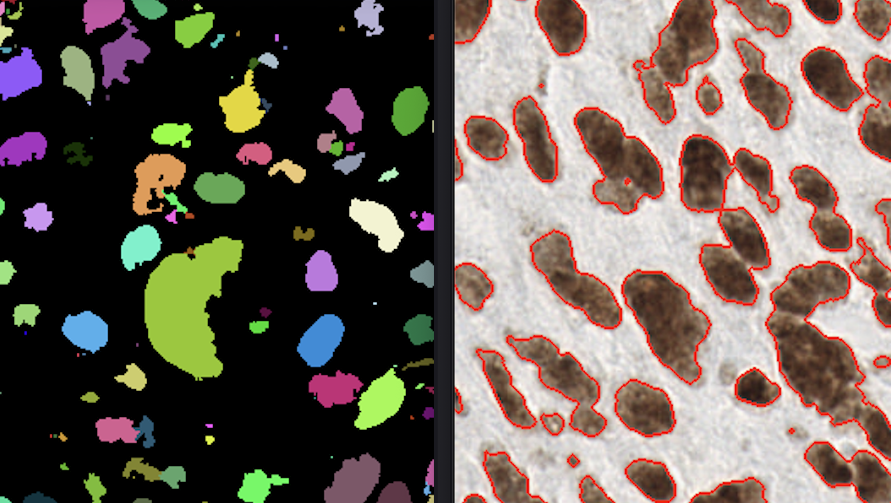

side A · track 04
Machine Learning applied to Digital Pathology
teaching a model to read IHC slides
A Python and R-based machine learning pipeline that segments cells in digital pathology images and predicts quantitative and qualitative immunohistochemistry (IHC) results.
ML

what it is
Immunohistochemistry (IHC) is usually scored by eye, slide by slide. This pipeline turns stained tissue images into numbers: it finds every nucleus, measures it, and decides whether it's positive or negative for the stain.
The result is a reproducible, per-nucleus readout that can be summarised into both quantitative and qualitative IHC results.
how it works
- Load & cleanTIFF images are read with EBImage and smoothed with a median filter.
- SegmentA distance map plus watershed splits touching nuclei, and each object gets its own label.
- MeasureShape and intensity features are computed for every nucleus on each colour channel, then explored with PCA.
- ClassifyA random forest (2,000 trees) trained on hand-labelled positive and negative nuclei uses DAB-stain intensity features; a confusion matrix checks it.
- ReportPredictions for each nucleus are collected and exported to Excel for analysis.